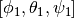

MathTools — Mathematical tools¶
This module provides Mathematical tools.
Module Syntax¶
Empty.
Module Contents¶
- MathTools.calculate_rotation_matrix(phi, theta, psi)¶
See also
Euler Angles
http://mathworld.wolfram.com/EulerAngles.html
- phi = 0 - 360 about the z-axis
- theta = 0 - 180 about the new x’-axis
- psi = 0 - 360 about the new z’-axis
Same formalism as in biopython Bio.PDB.Superimposer
 angles can be derived from Superimposer.rotran!
angles can be derived from Superimposer.rotran!
- MathTools.get_euler_angles_from_rotation_matrix(euler_rotation)¶
This method returns the angles from a rotation matrix, derived from euler angles. Because only angles in the range [0,360] (and [0,180]) are used, combinations due to the 2 pi periodicity are possible, but are of no interest.
To get the angles of a combined rotation by two sets of  and
![[\phi_2, \theta_2, \psi_2]](../../_images/math/1c04b875c882fe6b806d555e070389ed048c5fb1.png) one has to multiply the rotationmatrices with ‘np.dot(...)’!
one has to multiply the rotationmatrices with ‘np.dot(...)’!
- MathTools.get_euler_angles_for_equal_distributed_rotation(number_of_rotations)¶
This method returns an angle distribution that is pretty uniformley distributed.
- MathTools.points_on_sphere(number_of_points)¶
This code is based on the golden section (by Patrick Boucher 2006).
- MathTools.get_euler_angles(fixed_point, rotate_point)¶
This method returns a rotation matrix which rotates the ‘rotate_point’ onto the fixed_point.
- MathTools.get_neighbor_angle_set(n_rotations, max_dist)¶
This method returns euler angles for rotations, that rotate the object to a oritentation, where the distance displacement is less than max_dist. Notice, that the returned angle set does not have the specified number of rotations!
- MathTools.fix_grid_size(box_dim)¶
Fix the grid size.
Parameters: box_dim – list with dimensions of an APBS box Returns: a numpy array with fixed grid dimensions.
- MathTools.calculate_valid_dimension(c, nlev=4)¶
Due to a multilevel approach APBS requires the grid to be of certain sizes. (See APBS manual for more information.)
Self method ensures, that chosen grid dimensions meet these requirements. Current grid dimensions will be enlarged accordingly.
Parameters: - c – test grid dimension
- nlev – number of levels
Returns: integer number which has the correct dimension